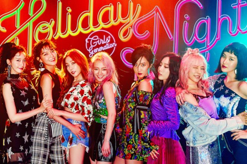

걸그룹
여성으로 구성된 그룹형 가수들. 남성 아이돌 그룹을 일컫는 보이그룹(Boy Group)와 함께 주로 외적인 퍼포먼스를 중심으로 활동하는 아이돌 그룹을 뜻하는 용어다. 한국 음반 시장의 한 축을 차지하고 있는 음악 장르이기도 하다. 비슷한 용어로 걸밴드(Girl Band)가 있다. 일반적으로 걸그룹이 안무와 노래까지만 할 수 있는 그룹을 뜻하고 걸밴드는 작곡이나 악기연주까지 할 수 있는 그룹을 뜻한다. 사실 이 두 용어가 항상 이렇게 명확히 구분되는 것은 아니다. 한국에서의 '걸밴드'의 예로는 한스밴드, AOA의 밴드 유닛인 AOA BLACK, 비밥, 선예와 안소희의 탈퇴 이후로 선미를 재영입한 4인조 걸밴드 원더걸스가 있다.
일본에서는 걸그룹이라는 용어가 잘 쓰이지 않는다. 일본에서는 '걸즈 유닛(ガールズユニット)'이라고 부르는 경우가 많고, '여성 아이돌'이라는 직관적인 단어도 자주 사용된다. 전자의 경우 상대적으로 '아티스트'적 성격이 강한 그룹을 지칭할 때 자주 쓰이며, 후자는 말 그대로 '여성 멤버로 구성된 아이돌 그룹' 전반을 지칭할 때 쓴다. 그래서 한국이든 일본이든 걸그룹 하면 대부분 한국 쪽의 걸그룹을 의미하는 경우가 많다. 세계적으로 유명한 걸그룹으로는 스파이스 걸스, 올 세인츠, 아토믹 키튼, 푸시캣 돌스, 데스티니스 차일드, TLC 등을 들 수 있다. 최근에는 피프스 하모니가 새로운 세계 걸그룹 강자로 떠오르고 있다. X Factor UK 시즌 8 우승자인 리틀 믹스도 인기가 많다. 그러나 2019년 피프스 하모니는 인기 멤버인 카밀라 카베요가 탈퇴하며 인기가 하락하다 활동이 중단됐고 리틀믹스는 사실상 영국 한정 걸그룹이 되었다. 최근에는 K-POP걸그룹도 전 세계적으로 많은 인기를 얻고 있다.